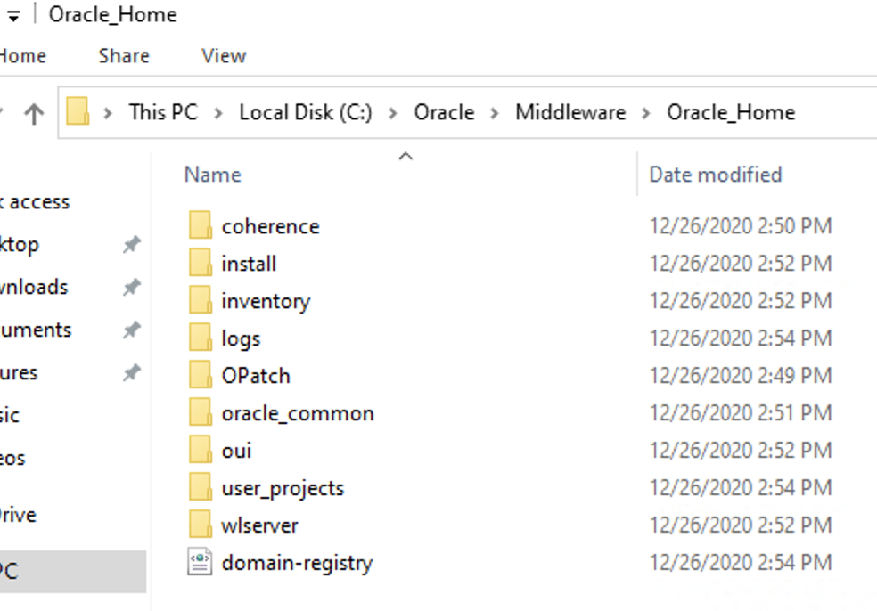
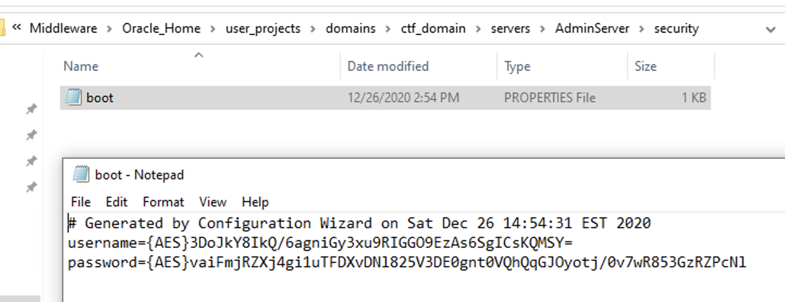

Simple Weblogic Learnings
While working an internal engagement, I'm tripping over Weblogic instances for days. Dipped into ysoserial plenty and ended up with something that loaded a broken admin page but no functions worked.
There were some backup servers running with exposed NFS shares though...
After digging through them and doing some googling on the folder structure, I'm looking at is weblogic directories...
Lets say it looked like below just to put a visual to it:

Even better I had read only to the whole pile, again staretd the digging (and maybe a hail mary massive find command looking for anything resembling "passw") and finally... boot.properties

Turns out this config is from Weblogic 12.1.3 when they used AES encryption for the passwords which allows decryption... but only locally...
So following something like: https://geekflare.com/decrypt-weblogic-password/
one should be able to run
C:\Oracle\Middleware\Oracle_Home\oracle_common\common\bin\wlst.sh (or wlst.cmd)
followed with the necessary environment variables:
domain = "/user_projects/domains/domain_name"
service = weblogic.security.internal.SerializedSystemIni.getEncryptionService(domain)
encryption = weblogic.security.internal.encryption.ClearOrEncryptedService(service)
Then finally feeding in the hash from boot.properties with
print encryption.decrypt("{AES}WDhZb5/IP95P4eM8jwYITiZs01kawSeliV59aFog1jE=")
Being that I have read only permission, I was able to pull down this entire structure and insert it into a lab environment, successfully decrypting the password
weblogic123
which is obviously a demo... So lots of effort for lots of nothing since that default cred was long gone, still an interesting exercise